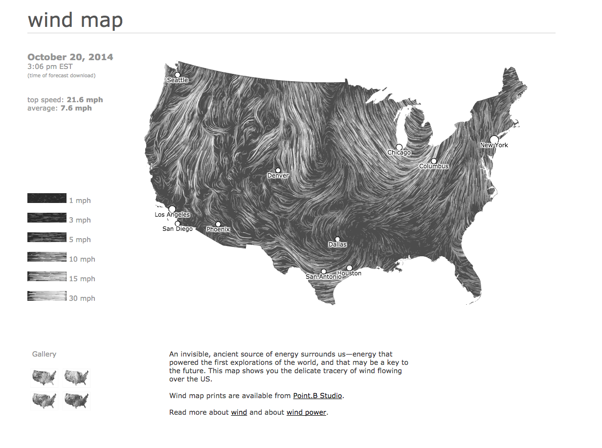
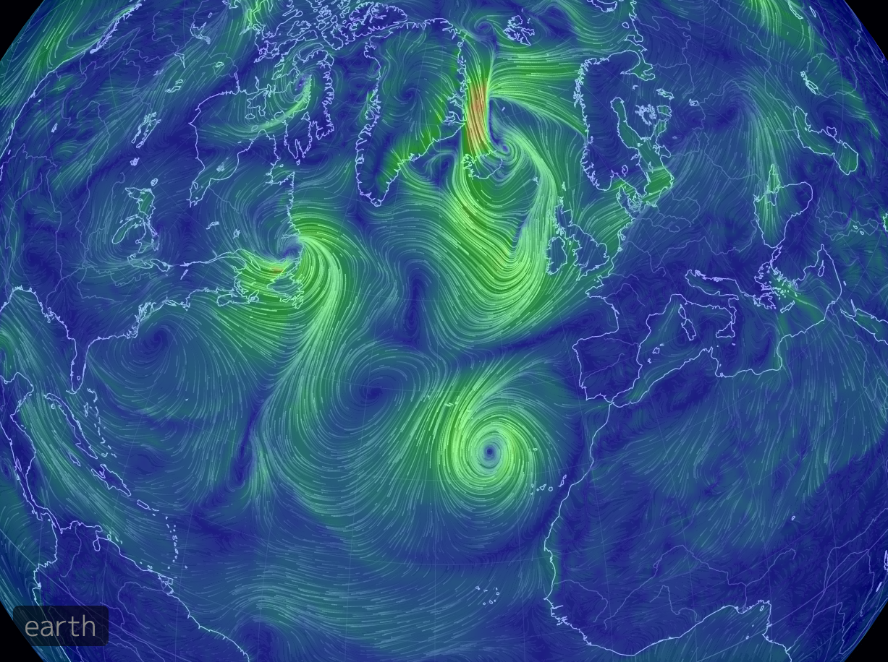
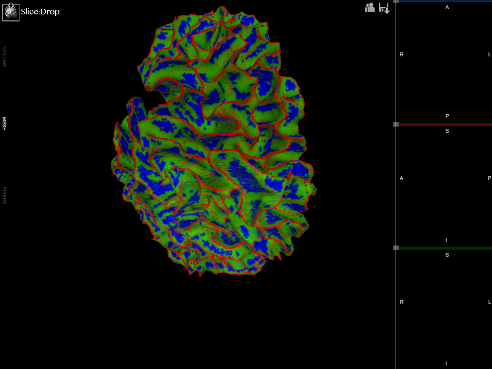
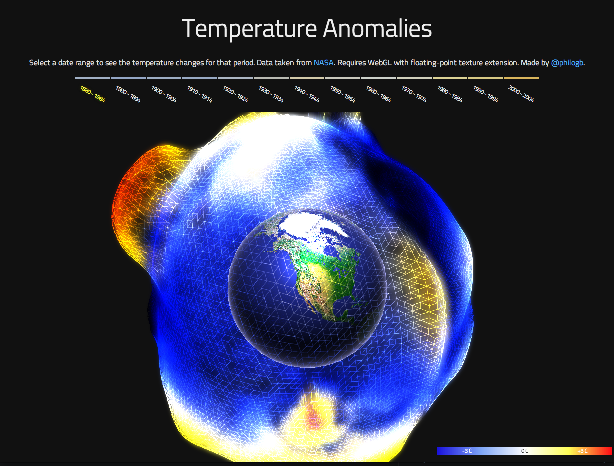
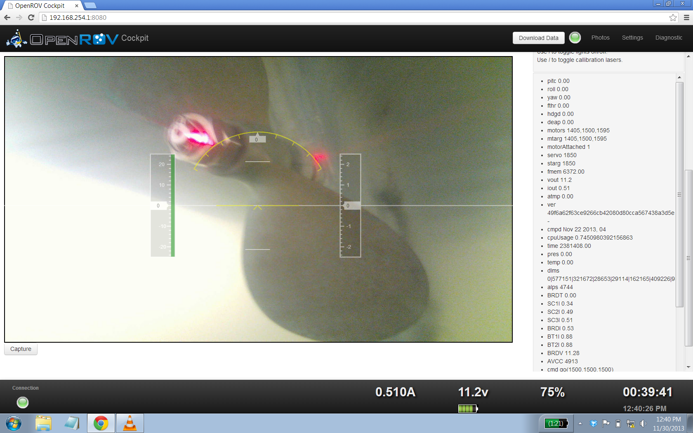
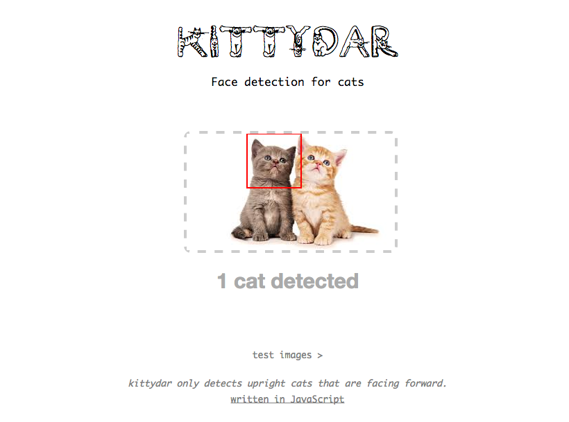

Science in the browser - talk and resources. October 2014
It's 2014 and web browsers aren't just for displaying carefully, or carelessly, styled graphics and text. We can load data into the browser and manipulate it, share it, and admire it. Let's do science in the browser.
This project presents several easy to follow, and copy, examples as a starting point for projects, discussion, or learning. It draws on personal experience of what is required, or useful, to present and share scientific data within and between research teams.
These examples show how the browser can transform data into a variety of visual presentations. Drawing in this way, rather than including a pre-rendered PNG doesn't require a lot of Javascript code.
This first example presents the HTML5 canvas element as a surface for directly rendering data. No javascript libraries are required to plot data on the canvas.
For 3D graphics the location of the camera, and perhaps even lighting and textures, needs consideration. There's more setting up, but some data is presented much more naturally in this form.
All (usable) browsers provide an XMLHttpRequest object for fetching files from the web server. However it's always going to be necessary to deal with likely errors, the asynchronous nature of such requests and doing useful things with the returned data. For this reason just about everyone uses a cross-platform library such as JQuery or Angularjs.
Fetch json data files and render with Threejs
Science requires collaboration within and between teams. It takes many forms, for example sharing datasets in Dropbox or video conferencing.
Mozilla Lab's TogetherJS adds impressive collaboration features to webpages with very little extra code.
The libraries used in the above examples.
These are all work in progress, and were started before the examples above. By stumbling through these projects, and others, I realised simplified demos might help construct new tools.
What others are doing. Loads of inspiration here -
   http://philogb.github.io/page/temperature-anomalies/
 http://harthur.github.io/kittydar/
Project started by @msaunby